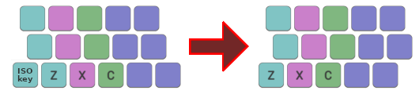

Colemak Mod-DH
A Colemak mod for more comfortable typing.
Colemak Mod-DH
Mod-DH is a minor modification to the Colemak keyboard layout which makes typing more comfortable.

Colemak with Mod-DH, shown for an ISO keyboard. Keys are colored according to the finger that should be used. The 10 most common English letters are assigned to the 10 easiest keys (highlighted in red).
Colemak is a great layout, but that doesn't mean it's impossible to improve on! The idea behind Mod-DH is that by making an adjustment to the placement of a small number of keys, it is possible to gain a significant improvement in ergonomics and comfort. See this comparison of Mod-DH with other layouts.
Highlights:- Places the heavily used D and H keys in more comfortable and easier-to-reach positions.
- Moves G to a slightly easier position also, reverting to its placement in Qwerty.
- Reduces usage of the difficult-to-reach center column by about half.
- Retains Colemak's many other strengths, such as it's home key placement and low rate of same-finger bigrams.
- No keys change fingers from standard Colemak, making it easy to adopt for existing Colemak users.
The mod consists of two separate parts, the left-hand "D" change, and the right-hand "H" change. It is perfectly acceptable to apply the mod to one side of the keyboard only. I especially recommend trying the left-hand change for the greatest benefit.
The Colemak forum has threads containing some background information to the creation of this mod, and also a more detailed discussion of it.
Changes From Colemak

Changed keys relative to standard Colemak. Note that none of the changes move keys to a new finger. This makes the mod easy to learn and also retains Colemak's excellent stats on same-finger bigrams.
Left Hand Changes
The primary change is to the left hand:
1. The "Angle Shift" mod (see below) is applied to keys Z, X, C. This moves them one space to the left but retaining the conventional finger.
2. Three keys are relocated: D, G, B. This makes the D key much easier to type, using your index finger. The position of G is also improves, and reverts to its Qwerty placement. The B key moves from the hard-to-reach position at the bottom-middle to the new location on the top row.
Right Hand Changes
There is a minor change to the right hand:
The H and M keys exchange places. This makes H easy to type, being the more common character than M. In addition, since HE is the second most common bigram in English, it makes it more comfortable to type very common words such as "the", "then", "where", etc.
Changes From Qwerty

Changed keys relative to Qwerty. If the left-hand (D) mod is applied only, 17 keys are moved, same as Standard Colemak. For the full mod, 19 keys are changed. In either case, there are 12 keys which change fingers, same as Colemak.
If you are currently using Qwerty and looking for a better layout, then both standard Colemak and Mod-DH are excellent choices. The change from Qwerty is not easy and can take some time, but is worthwhile in the end. If you start with Colemak but find the frequent reaching for D, H and G unsatisfactory, then Mod-DH is for you!
What's wrong with standard Colemak anyway?
For many people, nothing! But others who have tried Colemak have identified flaws, and have found the transition from Qwerty frustrating as a result. Some have even given up on Colemak and looked to other layouts instead. I believe that those who experience problems with Colemak need not give up on it. Mod-DH was created to fix the most common complaints, and to give a more comfortable Colemak experience for those who want it.
The most commonly identified flaw is Colemak's placement of the D and H keys. As the 8th and 10th most common letters in English, they should ideally be in easy-to-reach positions. Colemak places them on the centre column, which means a lateral motion of the hand is required to access them. If you try this motion frequently, you'll probably find it is somewhat less comfortable than simply moving the index finger down, to where Mod-DH places those keys. The H-E combination is often cited as a common English bigram that is unduly awkward with Colemak. If you think it's easier for the index finger to reach down one key to the bottom row than to the centre column, then you'll find Mod-DH more comfortable to use.
| left | right | total | |
| Colemak | 7.76% | 7.02% | 14.78% |
| Mod-DH (full) | 4.49% | 3.31% | 7.80% |
My own experience is that I used standard Colemak for several months, but was somewhat unsatisfied with the frequent reaching for the middle of the keyboard to type D and H, and to some extent G. But I stuck with it, being reluctant to change an established layout and thinking Colemak's other benefits would outweigh its drawbacks. And to be fair, for the most part they do. But I eventually came to realize that in fact there is no need to compromise: By applying Mod-DH, it is possible to retain Colemak's best features, while placing some common letters in easier to access locations and reducing the need to reach for the centre column. Within a couple of days using the left-hand "D" mod, I found it to be a noticeable, significant improvement over standard Colemak. And when applying the right-hand "H" mod, common english words containing HE (the, then, where…) become almost effortless.
The Angle Shift mod
The "Angle Shift" is a mod which makes it possible to adopt a more comfortable typing posture by introducing a degree of symmetry on a standard, staggered keyboard. The keys on the bottom-left are moved one space to the left, but you should type these keys with the conventional finger, Z=pinky, X=ring, C=middle. It works best on an ISO keyboard.

This technique is more comfortable then the traditional method, which requires the fingers to twist in an awkward way. Many (including myself) previously compensated for this by using the "wrong" fingers, i.e Z=ring, X=middle, C=index. However it should be noted that the Colemak layout is designed assuming the conventional finger assignment.
Many existing Colemak users apply the Angle Mod, see DreymaR's keyboard tricks. Mind you, even Qwerty users have noticed the issue! The Angle Mod is a good innovation, but in its default application assigns the rare V to one of best locations on the keyboard. Mod-DH fixes this by assigning D to that key instead.
An important feature of Mod-DH is that on standard keyboards, it makes use of the angle shift and defines the finger assignment as part of the layout itself.
Variants
DreymaR has created an alternative DH mod which moves fewer keys, and is suitable for standard staggered keyboards. For information, see the Curl-DH [DbgHk] variant.Implementation on Keyboard Types
The mod works best on keyboards which have good support for the "Angle" mod i.e. ISO keyboards, and symmetric ergonomic keyboards. It can also be applied successfully to ANSI keyboards with an adjustment. Let me know if you have other suggestions for implementing on an ANSI keyboard.
There are some example layout files in the Downloads section:
- Windows: files for use with Microsoft Keyboard Layout Creator;
- Linux: files for use with xmodmap.
Mod-DH is now also supported in DreymaR's Big Bag of Keyboard Tricks.
ISO Keyboards

Colemak Mod-DH for an ISO keyboard. The yellow keys may vary depending on your region.

Colemak Mod-DH for an ISO keyboard, in a "wide" configuration. This introduces a greater separation between the hands for a more ergonomic experience. See the Colemak Forum for more details on Wide mods. I recommend this approach if you have an ISO keyboard.
ANSI Keyboards

Colemak Mod-DH for an ANSI keyboard. Due to the lack of an extra key to the right of the left shift key, we need to relocate the Z key. Here is one possible placement. Fortunately Z is a rare key so hopefully it shouldn't have too adverse an effect!

Colemak Mod-DH for an ANSI keyboard with an alternative arrangement. Keeps Z in the same position relative to the other alphabetic keys by introducing a new column to the left.

Colemak Mod-DH for an ANSI keyboard without applying the angle mod. This is not recommended due to the non-optimal D key, but may be preferred by some.
Matrix/Ergonomic Keyboards

Colemak Mod-DH for an idealized, non-staggered keyboard.
Feedback / Issues
- Post an issue or question.
- Discuss it at the Colemak Forum.